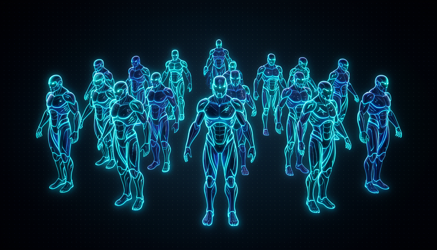

📖 Glossário vivo (leia antes — volte sempre que precisar)
A Trilha 1 já definiu o vocabulário base (modelo, prompt, agente, skill, codebase, harness). Aqui estão os termos novos deste módulo — fixe-os:
✖️ O efeito multiplicador
🧠 Imagine assim: uma lupa sobre o sol. A lupa não cria fogo sozinha — ela amplifica a luz que já chega. Aponte pro nada e nada acontece; aponte pra um foco bem definido e queima a folha. A IA é a lupa. A luz é a sua habilidade. Ela multiplica o que você traz — não inventa do zero.
A frase central de Matt Pocock neste tema é direta: "My skills are a multiplier for AI." — minhas habilidades são um multiplicador da IA. Repare na palavra escolhida: não é "soma", é multiplicação. Quando você soma, mesmo um zero do seu lado ainda deixa o resultado da IA de pé. Quando você multiplica, se o seu fator é baixo, a saída inteira encolhe junto. É por isso que duas pessoas usando o mesmo modelo produzem trabalhos de qualidades completamente diferentes.
O mecanismo é o contexto. Nas palavras dele: se você supervisiona um codebase e sabe como as coisas devem ser construídas — e diz isso à IA — então "a IA tem um contexto muito mais rico". Ela para de adivinhar e passa a seguir o seu padrão. Quem não sabe o que é um bom resultado não consegue descrever um bom resultado; logo, a IA recebe um pedido pobre e devolve algo pobre. O multiplicador, então, é menos sobre "digitar mais" e mais sobre ter o que dizer. Erro comum: achar que a IA "compensa" o que você não sabe. Ela amplifica o que você sabe — inclusive amplifica a sua falta de clareza.
Mesma IA, fatores diferentes. Como é multiplicação, o seu lado define o tamanho da saída.
⚠️ Erro comum de iniciante
Pensar "a IA é tão boa que minha habilidade não importa mais". É o oposto: porque a IA multiplica, a sua habilidade importa mais do que antes — ela é o fator que define o resultado.
Em 1 frase: a IA multiplica a sua habilidade — então o seu fator decide o tamanho do resultado.
Indo mais fundo (opcional): por que "multiplicador" e não "assistente"?
"Assistente" sugere que a IA faz parte do trabalho por você, somando à sua produção. Mas se fosse soma, alguém sem habilidade nenhuma ainda colheria todo o ganho da IA — e não é o que se observa na prática. "Multiplicador" descreve melhor o que se vê: o ganho de cada pessoa é proporcional ao que ela já traz. Por isso Pocock liga isso diretamente ao próximo ponto — o sênior, com fator alto, dispara.
🚀 Por que o sênior ganha 10x
🧠 Imagine assim: dê uma orquestra de classe mundial pra um regente experiente e a um leigo. O leigo não sabe nem o que pedir; o regente extrai uma sinfonia. A orquestra é a mesma — quem dispara o resultado é quem sabe reger.
Pocock é categórico: "AI makes senior developers 10x better." — a IA torna devs sêniores 10 vezes melhores. Por quê dez e não dois? Porque o sênior tem três coisas que o multiplicador adora: ele sabe o que pedir (descreve a tarefa com padrões claros), ele sabe ler o que volta (vê na hora se a IA quebrou alguma coisa) e ele tem repertório de casos (já errou antes, então previne erros que o iniciante nem enxerga). Cada uma dessas alimenta o contexto — e contexto rico é exatamente o que faz a IA render.
Isso tem uma consequência de mercado que ele aponta sem rodeios: não faz tanto sentido contratar um exército de juniores, porque agora "um sênior com IA faz o trabalho de muitos". O ponto não é desmerecer ninguém — é mostrar onde a alavanca está. O sênior não é 10x mais rápido digitando; ele é 10x melhor a delegar e supervisionar. A IA virou aquela "frota infinita de programadores táticos" do módulo anterior, e quem comanda a frota com mão firme colhe o multiplicador inteiro. Erro comum: medir ganho de IA por linhas digitadas. O ganho do sênior aparece no julgamento — no que ele aceita, rejeita e corrige.
Recuperação rápida: por que a IA torna o sênior "10x melhor"?
Em 1 frase: o sênior dispara 10x porque sabe pedir, sabe julgar e tem repertório — não porque digita rápido.
🌱 Por que o júnior ganha pouco
🧠 Imagine assim: dê uma câmera profissional pra um fotógrafo e pra quem nunca tirou foto. O primeiro faz capa de revista; o segundo melhora um pouquinho, mas ainda corta cabeças e desfoca tudo. A câmera é a mesma — falta o olho treinado pra usá-la.
Se o sênior ganha 10x, o júnior ganha — nas palavras de Pocock — apenas "um empurrãozinho". Não é que a IA seja inútil pra ele: é que ela só pode multiplicar o fator que existe, e o fator do júnior ainda é pequeno. Ele não sabe descrever o padrão certo (então o contexto sai pobre), não percebe quando a IA quebrou algo (então aceita erro sem ver) e não tem casos passados pra prever armadilhas. O resultado melhora, mas pouco — e às vezes piora, porque agora ele produz código ruim mais rápido.
Aqui mora uma cilada perigosa: a IA pode dar ao júnior a sensação de competência sem a competência. O código compila, a tela abre — parece pronto. Mas sem o critério pra julgar, ele não sabe o que está frágil por baixo. Por isso Pocock insiste que a saída do júnior não é "depender mais da IA", e sim subir o próprio fator: aprender fundamentos, ganhar repertório, desenvolver o olho. A boa notícia (e ele faz questão de dizer): entusiasmo e mentalidade experimental contam muito — um júnior empolgado que aprende rápido prospera. Erro comum: usar a IA como muleta pra nunca aprender o fundamento. Isso congela o fator baixo pra sempre.
🔬 Exemplo resolvido: mesma tarefa, dois fatores
Pedido idêntico à mesma IA: "adicione cache nesta API". Veja o que o fator de cada um faz:
Júnior (fator baixo)
Pede "põe um cache aí". A IA escolhe um cache em memória qualquer. Ele vê funcionar e aceita. Em produção, com vários servidores, o cache fica inconsistente — bug que ele não tinha repertório pra prever.
Sênior (fator alto)
Pede "cache distribuído (Redis), TTL de 60s, invalida na escrita, e cobre com teste". A IA entrega exatamente isso. Ele lê, confere a invalidação e aprova. Mesma IA — contexto rico mudou tudo.
Em 1 frase: a IA só multiplica o fator que existe — fator baixo, ganho pequeno (e risco de produzir erro mais rápido).
🪟 Skill baixa achata a IA
🧠 Imagine assim: um teto baixo numa sala. Por mais alto que alguém pule, bate a cabeça no teto. A IA é quem pula. O seu teto é a altura da sala. Teto baixo = ela bate e para, por mais "potente" que seja.
Aqui está a frase que dá nome ao módulo, citada literalmente: "Your skills are the ceiling on what AI can do. If your skills are low, AI can't go past that." — suas habilidades são o teto do que a IA consegue fazer; se suas skills são baixas, a IA não passa disso. Note a diferença em relação ao multiplicador: o multiplicador fala do tamanho do resultado; o teto fala do limite de qualidade. A IA pode produzir muito, mas não consegue produzir melhor do que você sabe reconhecer como bom. Ela bate no teto da sua habilidade e para ali.
Por que isso acontece? Porque julgar qualidade exige critério, e critério vem da sua experiência. Se você não sabe distinguir uma arquitetura sólida de uma frágil, a IA pode entregar as duas e você aprova a errada — o teto da sua percepção virou o teto do produto. É um efeito silencioso e perigoso: ele achata a IA pra baixo sem você notar, porque tudo "parece" funcionar. Por isso Pocock conecta tudo numa só conclusão prática: "ficar bom com IA = ficar bom no seu domínio". Subir o teto não é truque de prompt; é subir você. Erro comum: caçar "o prompt mágico" pra arrancar qualidade acima do seu teto. Não existe — o prompt não inventa critério que você não tem.

Em 1 frase: a IA não passa do teto da sua habilidade — então ficar bom com IA é ficar bom no seu domínio.
🏋️ Upskill em você
🧠 Imagine assim: dois investidores. Um gasta toda a renda em gadgets novos (o "modelo da semana"); o outro investe num índice que rende juros compostos (a própria habilidade). Em 5 anos, o segundo está em outro patamar. Upskill é juros compostos.
Se o teto é você, a alavanca óbvia é o upskill — investir em você, não só na ferramenta. É o contraste direto com o "vibe coder" da Trilha 1, que persegue o modelo novo toda semana e nunca sobe o próprio teto. Pocock junta as duas pontas: como a IA multiplica e o teto é a sua skill, todo ponto que você sobe em habilidade rende em dobro — uma vez no seu trabalho direto, outra vez no quanto a IA consegue extrair de você. É o investimento com o melhor retorno disponível hoje.
Na prática, isso reorganiza onde você gasta energia. Em vez de "qual o modelo mais novo?", a pergunta vira "qual fundamento do meu domínio eu ainda não domino?". É aprender a reconhecer uma boa arquitetura, entender por que um teste pega o bug, saber nomear o padrão certo. Essas são habilidades que não expiram quando o modelo muda — diferente de truques amarrados a uma ferramenta específica. E há um bônus que fecha o ciclo do curso: nas trilhas seguintes você vai aprender a empacotar parte da sua habilidade dentro de skills reutilizáveis, pra que a IA aplique o seu critério mesmo quando você não está olhando. Erro comum: confundir "aprender prompts" com upskill. Prompt é a casca; o teto é o conhecimento por baixo.
✓ Upskill em você
- • Entender por que um padrão é bom.
- • Ler código crítico e enxergar fragilidade.
- • Fundamentos do domínio que não expiram.
✗ Só a ferramenta
- • Caçar o modelo/app da semana.
- • Colecionar prompts mágicos.
- • Teto travado no mesmo lugar.
Em 1 frase: subir você rende em dobro — no seu trabalho e no que a IA extrai de você.
🎯 Como crescer o teto
🧠 Imagine assim: um plano de treino na academia. Você não vira forte assistindo vídeos de musculação — vira fazendo a série, toda semana, com carga crescente. Crescer o teto é rotina, não insight isolado.
Fechando: toda vez que você pensar "como faço a IA render mais?", traduza para "como subo o meu teto?". Abaixo está um plano simples, fiel ao que Pocock prega — não um truque de prompt, e sim um hábito que sobe a sua habilidade (e, junto, o que a IA consegue extrair). Copie, cole no seu bloco de notas e revise toda semana:
PLANO PRA SUBIR O TETO (revisar toda semana) [ ] SUPERVISIONAR — sempre leia o que a IA gerou e julgue: bom? por quê? [ ] PERGUNTAR "POR QUÊ" — quando aprovar, saiba explicar o motivo (se não sabe, estude). [ ] FUNDAMENTO DA SEMANA — escolha 1 conceito do seu domínio e domine de verdade. [ ] REPERTÓRIO — anote cada bug que a IA causou; vire critério pra próxima vez. [ ] DAR CONTEXTO RICO — descreva padrão, restrições e testes ANTES de pedir. [ ] NÃO USAR DE MULETA — se aceitou sem entender, é dívida: volte e entenda. Regra de ouro: ficar bom com IA = ficar bom no seu domínio.
Recuperação rápida: qual é o jeito certo de "fazer a IA render mais"?
Em 1 frase: "fazer a IA render mais" = subir o seu teto — com hábito, não com truque.
🧾 Resumo do Módulo
Próximo módulo:
2.3 — Conhecimento × Habilidade × Sabedoria: os três pilares da sua skill, e o que dá (e não dá) pra delegar.